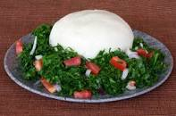

Preparation of ugali

Ingredients
- Honey
- Water
- maize flour
Other requirements
- Cooking gas
- cooking stick
- cooking pan
Steps
- Put mugs of water into to your pan
- Place the pan on the cooking gas and allow the water to simmer
- Add three table spoons of honey and stir it gently
- Now put the maize flour into the boiling water gently and stir it using a cooking stick till all the water is absorbed
- Cover the pan and lower the gas flame for 5 minutes and the serve the ugali into your favourite dish
- The ugali is now ready to be served with any stew